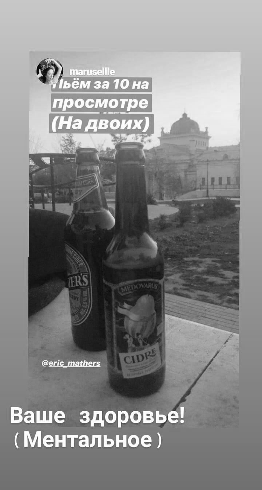

Мам, я не умею хорошо питаться, не выносить мозги людям, а также делать сайты. Забери меня обратно в Крым, я буду кушать шаурму с видом на море, писать взодухные стихи и никогда не появлюсь онлайн.
Господи, я вот сейчас заполняю этот дневник, и поняла, что не поздравила с днем рождения бывшего лучшего друга, в которого была влюблена. Прости меня, Аркаша, с праздником!
Не фыркайте, если режет слух словосочетание "бывший лучший друг". Просто прочтите написанное мною когда-то.
 Порой кажется, что вся жизнь зациклена на учебе и ничего другого не происходит. Но просто согласитесь пройти пешком около 7-ми км, под беседы и смех, невзирая на дедлайны. Побывайте впервые в центральном парке, вдохните теплую осень. Круто?
Бывают дни, которые наполнены абсолютно бессмысленными действиями и событиями, приправленными взрывоопасным раздражением: ведь все идет как-то не так.
Главное - предупредите близких о своей сегодняшней колючести и переживите это, вооружившись шоколадом и сериалами.
Осенний лес смеется тысячей оранжевых звезд, умирающих, но потрясающе красивых в свои последние дни. Подхватываемые дыханием ветра, они танцевали так, будто стремились брать от жизни все ее беды и взрывы, всю ее любовь и боль. Они падали, как пьяные звезды вечеринок, прекрасные в своей неугасаемой печали.
В Крыму не было переходного оранжево-желтого состояния между летом и зимой: из солнца сразу - в грязь. Здесь не так. А я ссорюсь и ловлю поцелуи, как обычно.
Четырехчасовой сон насмехается, будто возлюбленная, подарившая поцелуй и вечером сбежавшая на свидание с другим. Или взрослый, подаривший конфетку малышу и отнявший ее спустя секунду. Подводит здоровье: физическое и ментальное. Стискиваю зубы и громко говорю с отцом: пусть думает, что все хорошо.